| Alfred Evert | 20.01.2008 |
07.05. Zentrifugal-Schub-Motor
Zielsetzung
Für luft-betriebene Motoren wurde in vorstehenden Kapiteln diverse Ansätze aufgezeigt. Besonders leistungsfähig ist z.B. voriger ´Sog-Zylinder-Motor´, wenn er mit komprimierter Luft als Arbeitsmedium betrieben wird. Bei wasser-betriebenen Motoren ist die Organisation geschlossener Kreisläufe sehr viel problematischer wegen der starken Fliehkräfte des dichten Arbeitsmediums.
Mit dieser neuen Konzeption des ´Zentrifugal-Schub-Motors´ soll erreicht werden, dass Fliehkraft einen positiven Beitrag zum Drehmoment leistet. Dazu sind vorweg einige generelle Gesichtspunkte betreffend Trägheit in Rotorsystemen zu diskutieren.
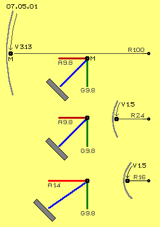
Gravitations- und FliehkräfteOben im Bild ist ein Ausschnitt eines Zylinders (grau) dargestellt, welcher ein Radius von 100 cm (R 100) aufweist. Entlang seiner Innenwand bewegt sich eine Masse M (schwarzer Punkt) mit einer Geschwindigkeit von 3.13 m/s (siehe Pfeil V 3.13). Diese Masse wird permanent nach innen umgelenkt. Diese Zentripetal-Beschleunigung wird nach Formel Geschwindigkeit zum Quadrat dividiert durch Radius berechnet, hier bei 3.13 m/s und Radius 1 m ergibt sich A = 3.13^2 / 1 = 9.8 m/s^2.
Dieser Beschleunigung zum Zentrum hin entspricht die Fliehkraft dieser Masse. In einem Kräftediagramm ist die Fliehkraft (A 9.8) als roter Vektor eingezeichnet. Die Gravitations-Beschleunigung ist ebenfalls rund 9.8 m/s^2, hier als grüner Vektor (G 9.8) vertikal-abwärts eingezeichnet. Die resultierende Kraft ist als blaue Linie eingezeichnet. Wenn vorige Zylinderwand die Innenseite eines Kegels (grau) von 45 Grad Neigung wäre, würde die Masse mit dieser Geschwindigkeit konstant auf gleicher Höhe rotieren.
In der mittleren Zeile dieses Bildes ist der Radius der Wand nur noch 24 cm (R 24) und die Masse bewegt sich nur noch mit 1.5 m/s (V 1.5). Die Zentripetal-Beschleunigung ist dann A = 1.5^2 / 0.24 = 9.8 m/s^2, die Fliehkraft (A 9.8) entspricht also wiederum der Gravitations-Beschleunigung (G 9.8). Das Kräfte-Diagramm ist somit identisch zu vorigem.
Wenn die gleiche Geschwindigkeit von 1.5 m/s (V 1.5) an nochmals kleinerem Radius von z.B. 16 cm (R 16) gegeben ist (unten in Bild 07.05.01), ergibt sich eine höhere Zentripetal-Beschleunigung von A = 1.5^2/0.16 = rund 14 m/s^2. Das Kräftediagramm zeigt, dass diese Masse auf einer runden Bahn (grau) von 45 Grad Neigung nach oben getrieben würde, wie allgemein bekannt ist, allein vom Kaffee-Umrühren.
Hebe-Kraft
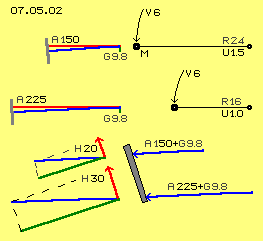
In Bild 07.05.02 ist die jeweilige Situation bei Radius 24 cm und 16 cm (R 24 und R 16) noch einmal in größerem Maßstab skizziert, nun aber mit größerer Geschwindigkeit von jeweils 6 m/s (V 6). Die Zentripetal-Beschleunigung ist entsprechend stärker mit A = 6^2/0.24 = rund 150 m/s^2 bzw. A = 6^2/0.16 = rund 225 m/s^2 (A 150 und A 225).In beiden Fällen ist die Fliehkraft also wesentlich höher als die Gravitationskraft (grüner vertikaler Vektor G 9.8) und entsprechend flacher sind die resultierenden Kräfte (blaue Vektoren). Die Massen würden damit an sehr viel steileren Wänden (grau) auf gleich bleibender Höhe rotieren.
Im Bild unten ist die Situation skizziert, bei welcher diese Kräfte auf eine flacheren Wand (grau) wirken. Diese Wand nimmt den Andruck senkrecht zu ihrer Oberfläche entgegen (dunkelgrüne Vektoren), so dass sich Kraft-Vektoren aufwärts, parallel zur Wand ergeben (H 20 bzw. H 30). Abhängig von der Geschwindigkeit und der Wand-Neigung ergibt sich eine Beschleunigung der Masse parallel aufwärts zur Wand, in diesem Beispiel im Rahmen von etwa 20 bis 30 m/s^2. Je schneller man umrührt und je flacher die Tasse bzw. der Teller, desto heftiger schwappen Kaffee oder Suppe über. Ein Anteil der Fliehkraft wird dabei zu einer Kraftkomponente entgegen gesetzt zur Gravitation. Schon bei diesen 6 m/s bzw. sechs Umdrehungen / Sekunde bzw. 360 rpm ist diese Hubkraft wesentlich stärker als die Gravitationskraft.
Spiralbahnen
In Bild 07.05.03 ist links schematisch das Rollen einer Kugel A dargestellt, beispielsweise eine Bowling-Kugel, die geradewegs auf einer Ebene nach links rollt. Darunter ist eine analoge Bahn dargestellt, allerdings im Kreis herum, entlang der Innenwand eines Hohlzylinders. Wenn eine Kugel (oder auch Wasser) mit einer bestimmten Steigung E unten in dieses Rohr hinein rollt (bzw. fließt), läuft es auf spiraliger Bahn bis zum oberen Ende und dort mit gleichem Winkel F wieder heraus. Die Bahn verläuft also kontinuierlich mit gleicher Steigung, praktisch wie das Gewinde einer Schraube.
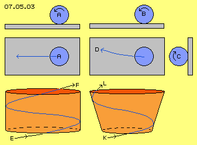
In diesem Bild rechts ist noch einmal eine Bowling-Kugel B skizziert, die wiederum vorwärts auf der Ebene abrollt. Nun aber wurde der Kugel eine zusätzliche Drehung C, quer zur Vorwärtsbewegung, mit gegeben. Daraus resultiert ein gekrümmter Bahnverlauf D (was von Bowling-, Kegel- oder Curling-Fans kunstvoll beherrscht wird).Dieser Querkraft C entsprechend wirkt vorige Hebekraft H, wenn diese Kugel (oder auch Wasser) unten in einen sich nach oben öffnenden Trichter hinein rollt (bzw. fließt). Die Bahn verläuft dann entlang der konischen Innenwand nicht mit gleichförmiger Steigung, sondern ist zunehmend nach oben-außen gerichtet. Diese Masse behält nicht mehr die anfängliche Steigung K bei, sondern bewegt sich auf zunehmend steilerer Bahn nach oben und verlässt den Kegel mit steilerem Winkel L.
Steiler und kürzer und schneller
In Bild 07.05.04 ist die Abwicklung des vorigen Kegels skizziert (hellrote Fläche), wobei die Querlinien jeweils 30 Grad markierten. Bei A fließt Wasser zum unteren Rand des Kegels ein und etwa 150 Grad später (Sektor S 150) am oberen Rand bei B wieder ab. Diese spiralige Bahn C (blau) repräsentiert also eine gleichförmig Steigung.
Die zusätzliche Anhebung der Bahn ist bei D skizziert. Dort tritt das Wasser ebenfalls mit 30 Grad am unteren Rand bei E ein, verlässt den oberen Rand bei F in steilerem Winkel von etwa 35 Grad. Diese Bahn D verläuft in einem Sektor (S 120) von nur 120 Grad, ist also kürzer und steiler und wird damit auch schneller durchlaufen als vorige Bahn C.
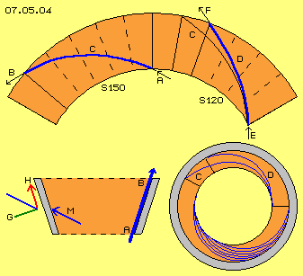
In diesem Bild unten rechts ist eine Sicht von oben auf diesen Hohl-Kegel-Stumpf skizziert. Eingezeichnet ist die Bahn C mit gleichförmiger Steigung sowie diese steilere und kürzere Bahn D. Unten ist durch diverse Kurven skizziert, wie Wasser sich fächerförmig entlang der Innenwand von unten nach oben ´schrauben-förmig´ bewegt, allerdings mit zunehmender Steigung.Unten links in diesem Bild ist schematisch ein Querschnitt durch diesen kegel-förmigen Zylinder skizziert. Das Wasser tritt prinzipiell unten ein, bewegt sich entlang der Wand und verlässt diese oben.
Die diagonale Bewegung M ist schematisch auch noch einmal links eingezeichnet. Die Trägheit weist immer gerade aus in Richtung der Bewegung, hier also schräg-vorwärts zur Innenwand hin. Die Umlenkung der Strömung ergibt zentripetale Beschleunigung bzw. zeigt sich als Fliehkräfte an der Innenwand. Diese kann Kräfte G nur senkrecht zu ihrer Oberfläche entgegen nehmen, so dass hier sich eine sehr viel stärkere Kraft-Komponenten H parallel zur Wand ergibt als bei obiger Rotation auf gleich bleibender Höhe.
Bislang sind in dieser ersten Sektion nur bekannte Sachverhalten aufgeführt. Bei der Konzeption dieses Zentrifugal-Schub-Motors ist dieser Hohl-Zylinder in Form eines Kegel-Stumpfes ein ´passives Element´, entlang dessen stationärer Innenwand das Arbeitsmedium (Wasser oder Öl) fließt. Das entsprechende ´aktive´ Element ist ein ebenfalls konischer Zylinder, dessen Kriterien in folgender zweiten Sektion nun zu diskutieren sind.
Rotor-Zylinder
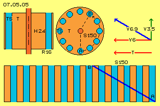
In Bild 07.05.05 ist diese Turbine T (rot) zunächst jedoch als runder Zylinder dargestellt, oben links im Längsschnitt, daneben im Querschnitt und unten eine Sicht von außen. An einem Radius von 16 cm (R 16) bzw. am Umfang von 1 m sind runde Kanäle angeordnet, hier als Turbinen-Schaufeln TS (hellblau) bezeichnet. Hier sind z.B. zwölf solcher Kanäle skizziert, welche jeweils parallel zur Systemachse und gerade von unten nach oben verlaufen.Das Wasser dreht unten z.B. mit 6 m/s genau so schnell wie die Turbine (siehe Pfeile V 6 und T). Das Wasser strömt z.B. im Winkel von 30 Grad aufwärts in die Kanäle. Die vertikale Geschwindigkeit ist dabei rund 3.5 m/s (grüner Pfeil V 3.5), die diagonale Geschwindigkeit ist somit rund 6.9 m/s (blauer Pfeil V 6.9).
Das Wasser fließt auf spiraliger Bahn diagonal aufwärts, wie hier am Umfang durch die blaue Linie von A nach B skizziert ist. Wenn der Zylinder z.B. 24 cm ( H 24) hoch ist, bewegt sich das Wasser innerhalb eines Sektors von 150 Grad (S 150) von unten nach oben.
Rotor-Kegel
In Bild 07.05.06 ist nun oben links die Turbine T (rot) als konischer Zylinder dargestellt. Die Kanäle sind am unteren Einlass wiederum am Radius 16 cm (R 16) angeordnet, am oberen Auslass aber am Radius von 24 cm (R 24). Diese Turbinen-Schaufeln TS (hellblau) verlaufen also von unten nach oben diagonal aufwärts-auswärts.
Wie in vorigem Bild soll das Wasser wiederum diagonal im Winkel von 30 Grad unten einfließen (nun jedoch parallel zur schräg stehenden Wand). Die Höhe des Zylinders soll so bemessen sein, dass sie in diagonaler Richtung wiederum obige 24 cm ergibt. Der Weg des Wasser entspricht also der Bahn von A nach B in vorigem Bild, verläuft also auch wiederum innerhalb eines Sektors von 150 Grad (S 150).
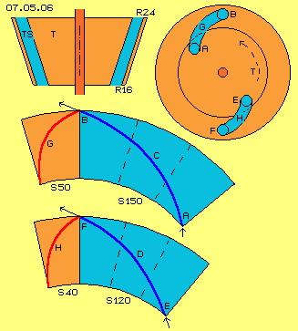
In Bild 07.05.06 in der mittleren Zeile ist nun die Abwicklung des Kegelmantels dargestellt. Diese Bahn C (dunkelblaue Kurve) verläuft nun spiralig aufwärts und auswärts von A nach B, innerhalb dieses blau markierten Sektors (S 150). Der Umfang am Auslass ist länger als am Einlass (in Relation der Radien von 16 zu 24 cm), der Auslass bewegt sich also mit größerer Absolut-Geschwindigkeit als das Wasser. Das Wasser würde also in den Kanälen beschleunigt (was nicht Aufgabe einer Turbine ist).Damit das Wasser den Kanälen folgen kann, müssen diese nach rückwärts im Drehsinn weisen. Die Kanäle müssen dazu in einem Sektor von 50 Grad (S 50, rot markiert) einen nach hinten gekrümmten Verlauf aufweisen, wie durch die Kurve G (dunkelrot) skizziert ist.
Wie oben festgestellt wurde, drückt natürlich auch das Wasser innerhalb dieser Kanäle per Fliehkraft auf die schräg stehende Außenwand. Ab einer gewissen Geschwindigkeit wird damit auch dieses Wasser angehoben. Wenn die Kanäle diese zusätzliche Bewegung aufwärts-auswärts zulassen, fließt Wasser oben in steilerem Winkel aus dem Auslass.
In der unteren Zeile dieses Bildes ist skizziert, dass Wasser unten bei E im Winkel von 30 Grad eintritt, oben bei F aber mit 35 Grad austritt. Die kürzere und steilere Bahn D beansprucht dann nur noch einen Sektor von 120 Grad (S 120, blau markiert). In dieser kürzeren Zeit dreht der Auslass weniger weit im Raum, so dass die Kanäle auch etwas steiler angestellt sein können, wie durch Bahn H (dunkelrot) in einem Sektor von 40 Grad (S 40, hellrot markiert) skizziert ist.
In diesem Bild rechts-oben ist schematisch ein Querschnitt durch diesen Kegelstumpf dargestellt. Oben ist der Kanal G (hellblau) skizziert, der innerhalb dieses Sektors von 50 Grad rückwärts (gegen den Drehsinn der Turbine) gekrümmt ist. Das Wasser fließt darin vom Einlass A zum Auslass B, im Raum um diese 150 Grad vorwärts. Unten ist der Kanal H skizziert mit seiner Krümmung innerhalb eines Sektors von nur 40 Grad. Das Wasser fließt darin von E nach F und im Raum nurmehr um 120 Grad vorwärts, aufgrund seiner Fliehkraft schneller nach oben und erreicht darum etwas früher den Auslass.
Turbinen-Schaufel
In Bild 07.05.07 ist links noch einmal dieser ´neutrale´ Verlauf H (dunkelrot) des Kanals innerhalb eines Sektors von 40 Grad (S 40, hellrot) skizziert sowie die entsprechend ansteigende Bahn D (dunkelblau) des Wassers innerhalb eines Sektors von 120 Grad (S 120 hellblau). Links unten ist die Abwicklung auf dem Kegelmantel dargestellt, darüber in einer Sicht radial zur Systemachse hin.
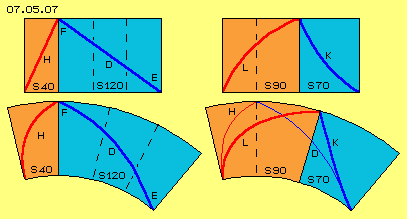
Wenn nun das Wasser nicht nur ´kräfte-neutral´ durch diesen Kegel-Stumpf laufen soll, sondern dabei mechanisches Drehmoment in dieser Turbine generiert werden soll, müssen die Kanäle noch weiter rückwärts im Drehsinn gekrümmt sein, wie in diesem Bild rechts schematisch dargestellt ist. Hier ist der Verlauf des Kanals z.B. um weitere 50 Grad rückwärts gekrümmt, wie durch Kurve L (dunkelrot) innerhalb eines Sektors von nun 90 Grad (S 90, hellrot, vorige 40 + 50 Grad) skizziert ist.Entsprechend wird nun die Bahn K (dunkelblau) weiter nach oben gedrückt. Das Wasser bewegt sich nur noch innerhalb eines Sektors von 70 Grad (S 70, hellblau, vorige 120 - 50 Grad). Rechts-oben ist dieses wiederum per radialer Sicht skizziert, rechts-unten auf der Mantel-Abwicklung. Durch dünne Kurven sind dort noch einmal die ´neutralen´ Kurven H des Kanals bzw. D des Wassers markiert. Im Vergleich dazu wird die Umlenkung des Wassers auf die kürzere und steilere Bahn K ersichtlich.
Auch in dieser zweiten Sektion wurden also nur bekannte Gesichtspunkte zu einer Turbine mit axialem Durchsatz dargestellt. Für den Einsatz unter ´normalen´ Bedingungen ist diese Konzeption nicht besonders günstig. Erst nachfolgende konstruktive Merkmale werden ´normalerweise´ kaum angewandt und ergeben die besondere Funktion dieser Maschine.
Konus-Wand und Kegel-Turbine
In Bild 07.05.08 ist unten im Längsschnitt die kegelstumpf-förmige Turbine T (rot) dargestellt, welche z.B. oben einen Radius von 24 cm aufweist (R 24) und unten von 16 cm (R 16) bei einer Höhe von rund 24 cm (H 24). Unten ist diese Turbine ergänzt um einen Bereich des Turbinen-Einlasses TE mit 12 cm Höhe (H 12) bis zu einem Radius von 12 cm (R 12).
Oben wurde der prinzipielle Verlauf der Turbinen-Schaufeln TS (hellrot) am Beispiel runder Kanäle innerhalb der Turbine diskutiert. Hier nun sind diese Kanäle an der seitlichen Oberfläche der Turbinen angelegt und nach außen hin offen. Die ganze Turbine ist eingefügt in die Konus-Wand KW (grau). Diese Wand ist fest verbunden mit dem Gehäuse (hier nicht eingezeichnet) und innerhalb dieses Gehäuse-Hohl-Kegels dreht sich dieser Turbinen-Kegel.
Zwischen den Oberflächen beider Bauelemente befindet sich das Wasser (hellblau), einerseits als ringförmige Wassermasse entlang der Konus-Wand und andererseits innerhalb der Kanäle der Turbinen-Schaufeln.
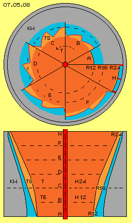
Sägezahn-SchaufelnDiese Turbinen-Schaufeln haben ein Druckseite, die (nahezu) in radiale Richtung weist, im Drehsinn also der vorderen Wand eines Kanals entsprechend. Der Kanal hat einen ´Boden´ bzw. eine Innenseite, die (nahezu) in tangentiale Richtung weist. Eine diagonal-auswärts gerichtete Strömung fließt praktisch parallel zu dieser Innenseite. Die Druckseite plus Innenseite bilden die Kontur eines asymmetrischen Sägezahns. Die Innenseite verläuft von der inneren Kante der Druckseite zur äußeren Kante der nachfolgenden Druckseite. Diese drei-eckige Kontur hat somit keine hintere Wand bzw. Sog-Seite.
Im Längsschnitt sind verschiedene axiale Ebenen per gestrichelter Linien markiert und mit A bis H gekennzeichnet. Oben in Bild 07.05.08 sind jeweils Sektoren dieser Schnittflächen skizziert. Am unteren Ende A des Turbinen-Einlasses ist der Radius 12 cm und dem Wasser steht dort eine ringförmiger Querschnittsfläche zwischen runder Turbine und runder Konus-Wand zur Verfügung (hier in einem Sektor von 30 Grad dargestellt).
Weiter nach oben ´wachsen´ aus der runden Turbinen-Oberfläche die zahnförmigen Schaufeln heraus. Bei B ist die innere Kante noch immer nahezu bei Radius 12 cm, während die äußere Kante des Zahns weiter hinaus in den ringförmigen Kanal weist. Hier sind z.B. zwölf Turbinen-Schaufeln unterstellt, in Sektor B von 60 Grad sind zwei dieser Zähne eingezeichnet.
Im Schnitt C ist der Übergang vom Turbinen-Einlass (TE) zur eigentlichen Turbine (T) dargestellt. Die Zähne reichen dort bis zum Radius 16 cm und andererseits weisen hier die Einkerbungen ihre größte Tiefe auf. Wiederum sind in diesem Sektor C von 60 Grad zwei dieser Zähne eingezeichnet.
Weiter nach oben bzw. außen wird der Umfang zunehmend länger und damit auch die Einkerbungen. Wenn dem Wasser gleichbleibende Querschnittsflächen zur Verfügung stehen soll, müssen die Einkerbungen entsprechend geringere Tiefe aufweisen. In den Schnitten D, E und F sind wieder jeweils zwei Turbinen-Schaufeln in Sektoren von jeweils 60 Grad eingezeichnet.
Sektor H ist nur mit 30 Grad dargestellt, also der Länge eines Zahnes. An diesem Radius von 24 cm ist der Übergang zum Turbinen-Auslass, wo das Wasser in möglichst gleichförmigem, flächigem Strahl austreten sollte. Die Kontur des Kanals sollte darum ringförmig sein. Auch das bislang außerhalb der Kanäle befindliche Wasser sollte darin eingeschlossen sein. Dort bietet sich die Ausbildung einer Düse an und die lang-gestreckten Kanäle könnten dort durchaus noch einmal unterteilt werden durch radiale Wände (dicke rote Linien), um die Druckfläche in diesem Bereich zu vergrößern.
Wendel-Treppen
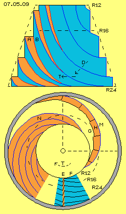
Einen Eindruck der spiraligen Anordnung obiger zahnförmiger Einkerbungen entlang der Kegeloberfläche soll Bild 07.05.09 vermitteln: an einem kegelförmigen Berg sind rundum Wege A (rot) angelegt, die unten flach beginnen und nach oben zunehmend steiler werden. Jeder Weg wird durch eine senkrechte Wand B (hellblau) begrenzt, über welcher sich der nächste Weg befindet. Nur links ist der Blick auf diese Wege gegeben, während an der rechten Hälfte des Berges nur die senkrechten Wände sichtbar sind.Generell wird hier Drehung gegen den Uhrzeigersinn unterstellt, da hier aber der Kegel umgekehrt dargestellt ist, verlaufen die Wege hier rechts-drehend aufwärts. Wenn wir diesen kegelförmigen Berg als Turbine betrachten, fließt das Wasser in einer Strömung D diagonal abwärts im Uhrzeigersinn, trifft fast rechtwinklig auf diese Wege und versetzt die Turbine T in Drehung.
Unten in diesem Bild ist eine Sicht von oben auf diesen kegelförmigen Berg dargestellt. Ganz unten bei E und F sind ´Höhenlinien´ eingezeichnet, die eine zahnförmige Einkerbung in der Oberfläche zeigen. Im Drehsinn stellt diese Kante E (rot) eine Druckseite dar, während die andere (Innen-) Seite F (hellblau) nur eine schräg abfallende Fläche darstellt und damit keine ´Sogseite´ gegeben ist.
Diese Einkerbungen sind nun nicht direkt untereinander angeordnet, sondern seitlich versetzt wie bei G skizziert ist. Vorige vertikale Einkerbung E ergibt damit eine Druckwand H (rot), praktisch entsprechend zu vorigem Weg A mit seinem spiraligen Verlauf. Vorige Innenwände F schließen nun aneinander an zu einer durchgängigen Fläche M (blau) und bilden vorige senkrechten Wände B zwischen den Wegen. Der ganze Berg wird praktisch aus mehreren ´Wendel-Treppen´ gebildet, allerdings ohne Treppen-Stufen und nach oben mit jeweils kleinerem Radius und zudem steiler ansteigend.
Bei N ist eine Ausschnitt mit mehrere dieser spiraligen Wege dargestellt, wobei die senkrechten Wände dazwischen nur als schmale blaue Kurven sichtbar sind. Wenn man diesen Berg wiederum als Turbine betrachtet, stellt die gesamte Oberfläche dieses Kegelstumpfes eine Druckseite dar in Form von abgestuften spiraligen Flächen. Wie diagonal fallender Regen fällt das Wasser rundum im Uhrzeigersinn auf diese Flächen und versetzt die Turbine in Drehung. In dieser Maschine ist der Turbinen-Kegel umgeben von der ebenfalls kegelförmigen Konus-Wand (hier nicht eingezeichnet).
Kreuzende Strömungen
In Bild 07.05.10 ist die Abwicklung der Oberfläche eines Kegelstumpfes dargestellt mit seiner kompletten 360-Grad-Mantelfläche, vier mal unter einander. Der weite Teil des Kegelstumpfes hat einen Radius von 24 cm und einen Umfang von rund 150 cm (R 24 und U 150), der enge Teil hat einen Radius von 16 cm und einen Umfang von rund 100 cm (R16 und U 100), die Höhe der Seitenwand ist etwa 24 cm (H 24). Am Beispiel dieser Abmessungen wurden oben die Strömungen entlang der Konus-Wand wie auch innerhalb der Turbinen-Kanäle diskutiert.
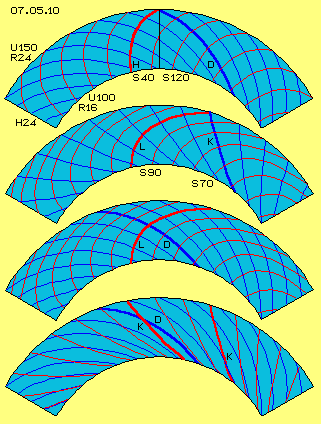
Der Zufluss am engen Umfang wurde mit einem flachen Winkel von 30 Grad unterstellt. Bei gleich bleibendem Winkel würde die Strömung innerhalb eines Sektors von etwa 150 Grad oben abfließen. Aufgrund Fliehkraft an der Konus-Wand wird das Wasser angehoben, nimmt eine steilere Bahn innerhalb eines Sektors von nur rund 120 Grad (S 120) ein und fließt oben ab in einem Winkel von etwa 35 Grad. Diese Bahn D (dunkelblau) ist am Mantel oben im Bild mehrfach eingezeichnet.Auch Wasser innerhalb von Kanälen würde eine entsprechende Bahn nehmen. Am längerem Umfang kann das Wasser jedoch nicht mehr dem drehenden Kegelstumpf folgen. Für einen ´kräfte-neutralen´ Verlauf müssten die Kanäle um ein Drittel im Drehsinn nach hinten-aufwärts gekrümmt sein. Dieser Kanal H (rot) innerhalb eines Sektors von 40 Grad (S 40) ist oben im Bild ebenfalls mehrfach eingezeichnet.
Wenn diese Turbine mechanisches Drehmoment generieren soll, muss der Kanal noch weiter nach hinten gekrümmt sein. Hier wurde dessen Sektor beispielsweise auf 90 Grad erweitert (S 90) und das Wasser wird darin schneller nach außen geführt innerhalb eines Sektors von nur noch 70 Grad (S 70). Am zweiten Mantel ist dieser Kanal L (rot) und die Bahn K (blau) des Wassers in diesem Kanal mehrfach eingezeichnet.
Die Kanäle der Turbine werden hier durch zahnförmige Einkerbungen repräsentiert, sind also nach außen offen. Entlang der Turbinen-Oberfläche treffen damit zwei Strömungen zusammen: einerseits die erzwungene Bewegung innerhalb der Kanäle und andererseits der freie Fluss des Wassers entlang der Konus-Wand. Am dritten Mantel dieses Bildes sind wiederum der Verlauf der Kanäle L (rot) mehrfach eingezeichnet sowie der Verlauf D (blau) des frei fließenden Wassers. Beide kreuzen sich etwa rechtwinklig.
Das frei fließende Wasser ist oben zwar langsamer als die dortige Turbinen-Oberfläche dreht, aber ausreichend schnell um über den rückwärts gekrümmten Kanal L hinweg zu fließen. In der Abbildung des Mantels ganz unten im Bild sind beide unterschiedliche Strömungen eingezeichnet: die Bahn D (blau) freien Wassers und die erzwungene Bahn K (hier nun rot gezeichnet) des Wassers innerhalb der Kanäle.
Beide Strömungen sind wiederum mehrfach und so eingezeichnet, dass die Überschneidungen ersichtlich werden: die freie Strömung schneidet das Wasser der Kanäle in spitzem Winkel, aber immer von hinten nach vorn. Das freie Wasser ´bürstet´ das Wasser innerhalb der Kanäle vorwärts im Drehsinn des Systems. Innerhalb der Kanäle wird das Wasser damit umgewälzt.
Das innerhalb der Kanäle nach rückwärts gelenkte Wasser gab seine Trägheit an die Kanal-Druckseiten ab und wurde dabei in seiner Vorwärtsbewegung verzögert. Dieses Wasser weist natürlich noch immer Fliehkraft auf, aber je weiter es nach außen strömt, desto schneller eilt die Druckwand nach vorn davon. Dieses ´zu langsame´ Wasser könnte nur auf noch weiter rückwärts gekrümmte Wände weiterhin Druck ausüben, aber nur mit minimalem Winkel und damit praktisch keinem Zuwachs an Drehmoment.
Auch das frei fließende Wasser kann der Drehung der Turbine an großem Umfang nicht folgen. Wohl aber fließt es schnell genug vorwärts-auswärts, um das Wasser innerhalb der Kanäle in diese zusätzliche Drehung zu versetzen. Diese Wasserwalze wirkt praktisch wie ein Getriebe (Zahnräder nicht paralleler Achsen) und vermittelt den Strömungsdruck des frei fließenden Wassers auf die Druckseiten der Kanäle. Das Wasser entlang der Konus-Wand wird dabei nicht in die Kanäle hinein gezwängt und damit in seiner Vorwärts-Bewegung auch nicht entsprechend verzögert. Vielmehr kann die Fliehkraft dieser freien Strömung weiterhin zum Drehmoment der Turbine beitragen, indirekt über den Antrieb dieser Wasserwalze in den Kanälen.
Umwälzung im Kanal
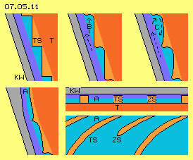
In Bild 07.05.11 sind Ausschnitte aus dem Bereich zwischen Konus-Wand KW (grau) und der Turbine T (rot) dargestellt. Entlang der Konus-Wand strömt das frei fließende Wasser aufwärts-auswärts. An der Oberfläche der Turbine sind die Turbinen-Schaufeln TS (hellrot) als zahnförmige Einkerbungen angebracht. Das Wasser in diesen Kanälen wird auf steiler Bahn nach außen geführt. Durch diese Umlenkung wird Drehmoment generiert.Zudem lastet auf den Druckseiten dieser Kanäle auch der Strömungsdruck B des frei fließenden Wassers. Diese Teilmasse des Wassers fließt auf einer weniger steilen Bahn und darum im Drehsinn schneller, d.h. es streicht über die Kanäle hinweg. Innerhalb der Kanäle ergibt sich damit eine walzenförmige Strömung C, durch welche der Druck auf die Druckseite der Kanäle verstärkt wird. Indirekt trägt damit auch das frei fließende Wasser zum Drehmoment bei.
Unten links ist der obere Auslass A der Turbine skizziert. Dort sollte auch das frei fließende Wasser in die Kanäle hinein geführt werden, z.B. indem die Konus-Wand dort etwas nach innen gekrümmt wird. Auch diese Teilmasse wird damit umgelenkt bzw. verzögert und damit nochmals Drehmoment erzeugt.
Unten rechts im Bild ist in Ausschnitten ein Quer- und Längsschnitt durch den Bereich des Auslasses skizziert. Der Kanal ist hier nicht mehr zahnförmig sondern weist gleich bleibende Breite auf, so dass alles Wasser in einem gleichförmigen Strahl aus der Turbine austritt. Der Kanal ist hier relativ lang und könnte durchaus durch zusätzliche Schaufeln ZS unterteilt sein zur Vergrößerung der Druckfläche.
Mit dieser Konzeption wird nicht alles Wasser sofort in Kanäle gezwängt, umgelenkt und verzögert. Das frei fließende Wasser behält zunächst seine Bewegungsrichtung bei und nur per Fliehkraft wird es steiler nach oben-außen gedrückt. Auf diesem Weg kreuzt es die gekrümmten Kanäle und versetzt das darin befindliche Wasser in zusätzliche Drehbewegung. Erst zum Auslass hin wird auch das bislang frei fließende Wasser durch die äußeren Teile der Turbinenschaufeln umgelenkt und verzögert.
Die Umwälzung des Wassers in den Kanäle vermittelt den Strömungsdruck des frei fließenden Wassers auf die Druckseiten der Kanäle. Es wird damit in jedem Kanal eine langgestreckte Wasserwalze gebildet. Deren Drehbewegung ist oben-außen schneller als unten-innen. Solch drehende Wirbel-Zöpfe wirken stark saugend in der Bewegungsrichtung zurück, ziehen also zusätzliche Wassermassen vom Turbinen-Einlass zum Auslass (siehe hierzu detaillierte Darstellungen in früheren Kapiteln bzw. auch unten).
Querschnittsflächen
In Bild 07.05.12 ist unten ein Längsschnitt durch die kegelförmige Turbine T (rot) skizziert, welche nach unten verlängert ist durch einen Bereich des Turbinen-Einlasses TE. Zwischen dieser Turbine und der Konus-Wand KW (grau) strömt Wasser vom unteren Einlass E zum oberen Auslass A, teilweise frei fließend (dunkelblau) entlang der Konus-Wand und teilweise (hellblau) durch die Kanäle der zahnförmigen Turbinen-Schaufeln.
Oben im Bild ist schematisch ein Querschnitt skizziert. Hellblau markiert ist darin der ringförmige Auslass A, welcher beispielsweise zwischen Radius 24 cm und 22 cm (R 24 und R 22) angelegt ist, also 2 cm breit ist und eine (Netto-) Querschnittsfläche von rund 250 cm^2 (F 250) aufweist. Ebenfalls blau markiert ist der ringförmige Einlass E, welcher hier beispielsweise zwischen Radius 16 cm und 12 cm (R 16 und R 12) angelegt ist, also 4 cm breit mit einer Querschnittsfläche von rund 350 cm^2 (F 350).
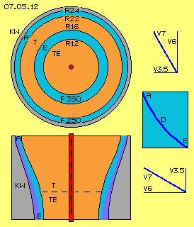
Rechts im Bild ist nochmals obige Kurve D (dunkelblau) eingezeichnet, welche die Bahn des Wassers in den Kanälen beschreibt. Das Wasser tritt unten bei E in einem Winkel von rund 30 Grad in die Turbine ein und verlässt es oben in einem Winkel von rund 60 Grad. Auch das frei fließende Wasser strömt unten mit diesem flachen Winkel in den Einlass, wird erst ganz oben in die Kanäle aufgenommen, d.h. verlässt ebenfalls den Auslass mit diesem steilen Winkel.Als diagonale Eintritts-Geschwindigkeit wurde oben rund 7 m/s (V 7) als Beispiel gewählt, d.h. bei diesem Winkel von 30 Grad mit rund 6 m/s (V 6) in horizontaler Ebene (gleich schnell wie die Turbine dort dreht) und rund 3.5 m/s (V 3.5) in vertikaler Richtung. Wenn diese rund 7 m/s auch oben am Auslass noch unterstellt werden, fließt dort beim steilen Winkel von 60 Grad das Wasser in horizontaler Richtung nurmehr mit diesen rund 3.5 m, verlässt aber den Auslass in vertikaler Richtung mit 6 m/s (siehe Vektor-Diagramme).
In Rohren ist die Fließgeschwindigkeit immer umgekehrt proportional zur Querschnittsfläche bei linearer Strömung. Hier bei diesem drehendem Fließen wird der Massedurchsatz zusätzlich durch die ´Steigung´ der Strömung bedingt bzw. ist nur jeweils die Geschwindigkeit in axiale Richtung zu beachten. Wenn z.B. oben das Wasser mit 6 m/s durch 250 cm^2 weite Öffnung vertikal abfließt, wäre unten am Einlass bei nur 3.5 m/s vertikaler Geschwindigkeit eine Öffnung von rund 420 cm^2 angebracht, d.h. diese Querschnittsfläche von nur 350 cm^2 ist eigentlich um ein Siebtel zu eng.
Sog-Effekt per Zentrifugal-Kraft
Oben wurde kurz ausgeführt, dass schon bei relativ geringen Geschwindigkeiten die zentripetale Beschleunigung bei diesen engen Radien ein Mehrfaches der Gravitations-Beschleunigung erreicht. Da diese im Quadrat zur Geschwindigkeit anwächst, drückt die Masse bald mit einem Vielfachen der Gewichtskraft nach außen. Bei der hier dargestellten Neigung der Konus-Wand wirkt rund ein Drittel dieser Kräfte parallel zur Wand aufwärts.
Das Wasser steigt damit aufwärts auf einer steiler werdenden Bahn und verlässt oben am Auslass die Turbine in relativ steilem Winkel. Wenn nun aber der Einlass-Querschnitt zu eng gewählt ist, kann gar nicht genügend Wasser nachfolgen bzw. umgekehrt wird damit das Wasser in seiner Aufwärtsbewegung zurück gehalten. Ersatzweise verbleibt damit zumindest das frei fließende Wasser auf flacherer Bahn, womit wiederum höhere Fliehkräfte auftreten. Letztlich bewirkt darum ein etwas zu enger Querschnitt am Einlass eine gewaltige Sogwirkung, wird Wasser von unten nach oben nach-gezogen.
In den bislang hier vorgestellten Maschinen konnten Turbinen nur immer die per Pumpen erzeugte Strömung in Drehmoment umsetzen. Bei luft-betriebenen Maschinen konnten dabei Bereiche relativer Leere erzeugt werden, in welche die Luft-Partikel aus eigenem Antrieb fallen. Es ist damit autonome Beschleunigung einer Luftströmung bis zur Schallgrenze möglich, bei minimalem Einsatz von Energie.
Wasser aber ist nicht kompressibel, d.h. Druck wird unmittelbar weiter gegeben - aber umgekehrt hat Sog ebenfalls ´keinen Spielraum´. Wenn hier also das Wasser im oberen Bereich der Maschine per anteiliger Fliehkraft nach oben gedrückt wird, zieht eben diese Kraft auch alles unterhalb befindliche Wasser nach oben. Im Gegensatz zu allen zuvor beschriebenen Maschinen wird hier also Strömung generiert allein auf der Wirkung der Fliehkraft. Experimente mit ähnlichen Maschinen ergaben, dass mehr Wasser hoch gezogen wurde als unten nachfließen konnte, obwohl nur einfache Kegel mit planer Oberfläche eingesetzt waren.
Pumpe-Turbine-Zwitter
Die Turbine nach obiger Bauart kann ebenso wirkungsvoll als Pumpe arbeiten, z.B. beim Start dieser Maschine. Durch die Drehung des Kegels wird das umgebende Wasser ebenfalls in Rotation versetzt. An der Konus-Wand wird das Wasser per Fliehkraft angehoben. Diese ´Pumpe´ weist keine nach vorwärts gerichtete Flächen auf, so dass sie keinen Druck ausüben kann. Es gibt nur die vertikalen Wände zwischen obigen ´Wendeltreppen´. Diese weichen fortwährend zurück und ziehen das Wasser hinter sich her im Drehsinn des Systems. Je höher das Wasser ansteigt, desto weiter wird der Radius, wobei das Wasser allein aufgrund Fliehkraft dort hinaus wandert.
Bei zunehmender Drehung werden die anhebenden Kraft-Komponenten der Fliehkraft größer und drücken nun aufwärts gegen die diagonal stehenden Flächen der Kanäle, bis diese Pumpe keinen Antrieb mehr erfordert. Bei nochmals erhöhter Drehzahl wird dann der Turbinen-Modus erreicht. Wenn nun keine Last angelegt wird, beschleunigt die Maschine selbst-tätig - bis kein Wasser mehr nachfolgen kann oder bis zur Selbst-Zerstörung.
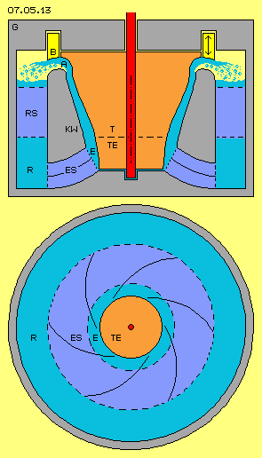
Sicherung zuerst, Haftungs-AusschlussDieses ´Sicherheits-Ventil´ kann auch in anderer Form oder an anderer Stelle installiert werden. In jedem Fall muss beim Bau solcher Maschinen zuerst die volle Funktionsfähigkeit dieses Bauelements sicher gestellt sein. Die Fliehkräfte wachsen bekanntlich mit dem Quadrat der Geschwindigkeit, ein Kilogramm Masse kann tonnen-schwer auf den Außenwänden lasten und anteilige Kräfte beschleunigen hier den Masse-Durchsatz bzw. werden in Drehmoment umgesetzt.
Ich beschreibe hier lediglich ein generelles Bewegungs-Prinzip und warum was wie gestaltet sein könnte. Für den realen Bau solcher Maschinen schließe ich explizit jede Haftung und Verantwortung aus. Das Risiko tragen allein die Hersteller und Betreiber solcher Maschinen.
Kreislauf
Wie oben detailliert beschreiben wurde, wird Wasser (hellblau) beim Einlass E in den Bereich des Turbinen-Einlasses TE eingesaugt. Zwischen den zahnförmigen Turbinenschaufeln und entlang der Konus-Wand KW fließt es aufwärts-auswärts. Ganz oben befindet sich alles Wasser im umlaufenden Kanal, wobei am Auslass A nun dieser flächige Strahl nach außen umgelenkt wird. Das Wasser fliegt dort in einen luft-gefüllten Bereich (hellgelb) und fällt aufgrund Schwerkraft abwärts (markiert durch hellblaue Punkte). Der Wasserspiegel dieses Rücklauf-Bereiches R befindet sich nur wenige Zentimeter unterhalb des Auslasses A. Nur um diese geringe Höhe muss das Wasser also gegen die Gravitation angehoben werden.
Das Wasser fließt aus der Turbine in relativ steilem Winkel ab, weist dort also relativ geringe Geschwindigkeit im Drehsinn des Systems auf. Während der Abwärtsbewegung sollte das Wasser wieder in stärkere Drehung kommen, z.B. durch entsprechend gekrümmte Leitbleche, welche hier als ´Rücklauf-Stator´ RS (dunkelblau) gekennzeichnet sind. Durch diese Querstreben ist die Konus-Wand fest mit dem Gehäuse verbunden.
Unten im Rücklauf ist ein Bereich als ´Einlass-Stator´ ES (dunkelblau) gekennzeichnet, innerhalb dessen die Strömung noch einmal durch Leitbleche zweckdienlich geführt wird. Der oben beschriebene Sog durch Fliehkraft zieht generell das Wasser aufwärts. Allerdings darf dieses Wasser nicht auf geradem Weg nach oben fließen, sondern muss drehend aufwärts strömen, damit weiterhin zentripetale Beschleunigung bzw. Fliehkraft existiert.
Der Raum im Einlass-Stator ist durch z.B. sechs Leitbleche mit entsprechender Krümmung unterteilt, wie schematisch unten im Bild durch einen Querschnitt dargestellt ist. Diese Kanäle können auch in axialer Richtung nochmals unterteilt sein. Mit dieser (oder anderer zweckdienlicher) Formgebung soll die gewünschte Drehung und Steigung der Strömung am Turbinen-Einlass erreicht werden.
Vorbilder Mazenauer und Clem
Fachkundige Leser kennen die Maschine von Hans Mazenauer und den voll funktionsfähigen Motor von Richard Clem, beispielsweise auch aus meinem Kapitel ´Auto-Motor´ von 2005 oder dem Kapitel ´05.10. Tornado-Motor´ der Äther-Physik. Dort habe ich vorwiegend die Sogwirkung der Drallbewegung in den Kanälen heraus gearbeitet, während in vorliegender Konzeption dieses ´Zentrifugal-Schub-Motors´ nun die enormen Fliehkräfte genutzt werden.
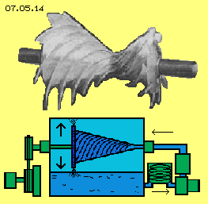
Mazenauer arbeitete mit einem luft-betriebenen Doppel-Kegel (siehe oben in Bild 07.05.14), der selbst-beschleunigend hoch fuhr bis zur Selbst-Zerstörung. Weil er sich mit diesen Experimenten finanziell ruiniert hatte, konnte Mazenauer seine Arbeiten leider nicht erfolgreich beenden. Mazenauer verwendete einen Doppel-Kegel, wobei der größere (im Bild links) als Turbine und der kleinere als Pumpe arbeitete. Zusammen ergibt sich damit ein ein- und ein ausdrehendes Wirbelsystem, überlagert durch Drallströmung innerhalb der Kanäle.Allerdings arbeitet eine Pumpe mit Zufluss von außen nicht besonders wirkungsvoll. Der gewünschte eindrehende Wirbel zum Turbinen-Einlass hin ist auch mit vorigen stationären Leitblechen obigen Einlass-Stators zu generieren (zumindest bei Wasser als Arbeitsmedium).
Clem hatte in Analogie zu einer Asphalt-Pumpe seinen Motor betrieben und damit sein Auto angetrieben, ohne jeden Verbrauch von Energie-Trägern, wie zweifelsfrei belegt ist. Aus den verfügbaren Skizzen und Bildern geht hervor, dass er einen Kegel mit sehr flach angelegten Kanälen eingesetzt hat (siehe unten in Bild 07.05.14). Darin wird das Arbeitsmedium allerdings in Längsrichtung ´umgerührt´. Das war vorteilhaft zur Erwärmung von Asphalt, aber Clem musste die überschüssige Wärme des eingesetzten Öls per Kühlung abführen. Aus meinen obigen Überlegungen bieten sehr viel steiler angelegte Kanäle einen weit besseren Winkel zur Generierung von Drehmoment. Zudem weisen Clems Kanäle relativ kleine Querschnittsflächen auf, so dass an vielen Oberflächen Reibungsverluste auftreten.
Wenn hier die Fliehkraft des Wassers genutzt werden soll, so ist Drehmoment nur per Druckwirkung zu erreichen. Die Kanäle müssen dazu nur Druckseiten aufweisen, auf welche Strömung bestmöglich wirksam werden kann. Im Gegensatz zu diesen beiden Vorbildern sind nach meinen Überlegungen darum diese ´Kanäle ohne Sogseite´ der zahnförmigen Turbinen-Schaufeln vorteilhaft.
Waagerechte Welle
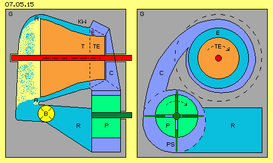
Obwohl die Anordnung des Motors mit waagerechter Welle zusätzliche Bauelemente und Aggregate erfordert, ist diese Bauweise durchaus eine interessante Alternative, wie beispielsweise in Bild 07.05.15 dargestellt ist. Die Konus-Wand KW (grau), die Turbine T und Turbinen-Einlass TE (rot) sind analog zur vorigen Konstruktion. Am Auslass A fällt nun aber das Wasser (siehe blaue Punkte) frei nach unten durch einen luft-gefüllten Bereich (hellgelb) in ein Auffang-Becken. An dessen Ausgang ist wieder obiges Sicherheits-Ventil B (gelb) installiert.Das Wasser fließt dann in ein Rücklauf-Behälter R (hellblau). Aus diesem wird das Wasser (dunkelblau) mittels einer Pumpe P (grün) und anschließender Schnecke C zum Einlass E geführt. Dieser Zufluss-Kanal ist diagonal angelegt, so dass das Wasser in gewünschtem Winkel zwischen Turbine und Konus-Wand strömt.
Die Pumpe muss so tief angeordnet sein, dass sie ausreichend Wasser fördert, um das System zu starten. Im laufenden Betrieb existiert so viel Sog, dass die Pumpe praktisch keinen Antrieb erfordert, sondern nur leer mit-dreht. Andererseits bewirkt eine Beschleunigung der Pumpe einen erhöhten Massedurchsatz mit direkt nachfolgender Steigerung der Turbinen-Leistung.
Im Prinzip können beliebige Pumpen eingesetzt werden. Hier ist schematisch eine Schieber-Pumpe P mit ihrer exzentrisch angelegten Welle und radial beweglichen Pumpen-Schaufeln PS (dunkelgrün) skizziert. Der Vorteil dieser Pumpe ist das exakte Volumen innerhalb ihrer Kammern (im Bild unten-links), das bei einer Umdrehung gefördert wird. Über die Pumpen-Drehzahl kann damit der Massedurchsatz exakt gesteuert werden.
Kleines Bauvolumen
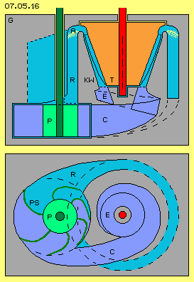
Dieser Motor mit waagerechter Welle könnte wie üblich in einem Fahrzeug eingesetzt werden für den mechanischen Antrieb über Kupplung und gängigem Getriebe. Andererseits ist elektrische Energie vielfältiger nutzbar, so dass dieser Motor bevorzugt zum Antrieb eines Elektro-Generators verwendet wird, zumal dieser ohnehin für den elektrischen Antrieb der Pumpe oder für Steuerungselemente erforderlich ist. Diese Aufgabe kann aber durchaus auch mit vertikal angeordneten Wellen erreicht werden.Normalerweise bedeutet größeres Bauvolumen bei einem Motor entsprechend größere Leistung. Hier aber beruht die Leistung auf Fliehkraft bzw. Zentripetal-Beschleunigung und diese ist umgekehrt proportional zum Radius. Bei gegebener Geschwindigkeit ist die Fliehkraft auf engen Radien sehr viel stärker als auf weitem Radius und entsprechend stärker ist die ´Hub-Komponente´ bei relativ kleinen Maschinen.
Bei der in Bild 07.05.16 skizzierte Maschine könnte die Turbine T (rot) einen weiten Radius von z.B. nur 18 cm aufweisen. Die Konus-Wand KW (grau) verläuft nach unten in gleichem Winkel bis in einen schneckenförmigen Einlass-Bereich (E).
Das Wasser verlässt die Turbine oben durch den Auslass A und fließt im Rücklauf-Bereich R nach unten zurück. Dieser Rücklauf windet sich spiralig abwärts und mündet unten in einer Pumpe P (grün). Diese führt das Wasser C zurück in den schnecken-förmigen Einlass unterhalb der Turbine. Der Weg des Wassers durch die Turbine und den Rücklauf ist hier hellblau, das Wasser innerhalb der Pumpe und bis zum Turbinen-Einlass ist dunkelblau markiert.
Die Pumpe ist hier schematisch in der Bauart einer Impeller-Pumpe eingezeichnet, welche wie obige Schieber-Pumpe je Umdrehung einen definierten Durchsatz hat. Über die Drehzahl der Pumpe kann dieser Motor gesteuert werden, wobei die still stehende Pumpe praktisch ein Absperr-Ventil darstellt. Auch hier wird der Sog von der Konus-Wand zurück wirken durch den Einlass bis zur Pumpe. Im laufenden Betrieb arbeitet diese praktisch nur als ´Moderator´ und erfordert nicht viel Antriebs-Energie.
Möglicherweise kann der gesamte Innenraum der Maschine mit Wasser gefüllt sein, auch im Bereich des Auslasses A, so dass ein geschlossener Wasser-Kreislauf gegeben ist. Dann könnte diese Maschine natürlich auch wieder mit waagerechter Welle gebaut werden. Darüber hinaus kann dieses Prinzip zur Nutzung der Fliehkraft in unterschiedlichen Varianten realisiert werden.
Unmöglich
Bei diesen Überlegungen kommt natürlich immer wieder die prinzipielle Frage auf, warum diese Maschine überhaupt lauffähig sein sollte. Außer Frage steht, dass ein Kilogramm Masse bei drehender Bewegung innerhalb eines Zylinders auf der Innenwand tonnen-schwer lastet. An einer kegelförmigen Innenwand drückt diese Masse anteilig zum weiten Ende des Kegels, also Strömung vom engen zum weiten Radius zustande kommt. Außer Frage steht, dass diese Strömung nebenbei auch mechanisches Drehmoment an Turbinen-Schaufeln generieren kann. Welcher Anteil hierbei zweckdienlich ist und bei welchem Abstand zwischen Turbine und Konus-Wand der beste Effekt erreicht wird, kann nur experimentell ermittelt werden. Sicher ist nur, dass über die Turbine nicht die gesamte kinetische Energie aus dem System abzuführen ist, weil sonst kein autonomer Strömungs-Kreislauf möglich wäre.
Da Wasser ´zusammen hängende Konsistenz´ hat, wirkt die Strömung entlang der Konus-Wand wie Sog auf nachfolgendes Wasser in gleichem Umfang, so dass ein geschlossener Kreislauf zustande kommt. Die Rückströmung muss möglichst reibungsfrei und ´kräfte-neutral´ erfolgen. Entscheidend ist dabei, dass Wasser zum engen Radius des Einlasses nicht entgegen-gesetzt zu seiner Fliehkraft geführt wird.
Unter diesen Bedingungen ist ein fortwährender Kreislauf mit Nutzen-Überschuss möglich. Der Strömungsdruck aus einem ´Wasserfall schweren Wassers´ wird teilweise in mechanisches Drehmoment überführt, danach muss das Wasser auf ´neutraler´ Bahn geführt werden und als ´leichtes´ Wasser zum Einlass geleitet werden. In vorigen Versionen wurden Maßnahmen dazu dargestellt, nachfolgende Variante zeigt noch einmal besonders vorteilhafte Lösungen auf.
Auslass und Wasserwalze
In nachfolgendem Bild 07.05.17 ist auf waagerechter Achse wiederum die Turbine T (rot) eingezeichnet inklusiv ihrer zahnförmigen Turbinen-Schaufeln TS (hier ebenfalls hellrot markiert). Der Kegelstumpf der Turbine ist verlängert um einen Bereich des Turbinen-Einlass TE. Dieser Oberfläche gegenüber befindet sich der Hohl-Kegel der Konus-Wand KW (grau), die fest verbunden ist mit dem Gehäuse G (grau). Zwischen diesen Oberflächen befindet sich Wasser (hellblau) in drehender Bewegung. Diese Anordnung der Elemente und die Bewegungsabläufe entsprechen vorigen Versionen.
In obigen Versionen wurde vorgeschlagen, die Strömung entlang der Konus-Wand zuletzt ebenfalls in die Turbinen-Kanäle zu leiten. Andererseits muss genügend restliche Strömung auch noch am Auslass gegeben sein. Welcher Anteil und in welchem Umfang das frei fließenden Wasser am Auslass ebenfalls an Turbinen-Schaufeln umzulenken ist, wird nur experimentell zu ermittelt sein. In diesem Bild ist beispielsweise der Auslass A so gestaltet, dass Wasser entlang der Konus-Wand frei abfließen kann. Die Erhebungen der Schaufeln gehen hier in einer Krümmung der Turbinen-Oberfläche über.
Als neues Bauelement ist hier ein rundum verlaufender Ring B eingezeichnet. Das Wasser mündet tangential in dieses ´runde Rohr´ und führt darin eine Drehung um 180 Grad aus. Es wurde oben unterstellt, dass Wasser am Auslass in einem Winkel von etwa 60 Grad fließt, so dass es spiralig in dieses Rohr einströmt. Egal mit welchem Winkel, in jedem Fall wird es außen per eigener Fliehkraft tangential aus diesem rundum verlaufenden Rohr abfließen (hier also nach rechts).
Solch scharfe Umlenkung ergibt normalerweise turbulente Strömung mit entsprechendem Reibungsverlust bzw. Strömungswiderstand, z.B. innerhalb jedem normalem Rohrbogen (weil der Weg innen-herum viel kürzer ist als außen-herum). Hier gibt es diesen engen Innen-Bogen nicht, es verbleibt vielmehr Wasser in einer walzenförmigen Drehung. In diese Wasser-Walze werden Strömungs-Schichten von unterschiedlichem Radius und unterschiedlicher Drehgeschwindigkeit reibungsfrei ausgeglichen. Dieses umlaufende Rohr und darin drehendes Wasser wirkt wie ein Kugel-Lager, so dass der Abfluss und die Umlenkung des Wassers zurück in Richtung Einlass nahezu verlustfrei erfolgt.
Axialer Rücklauf
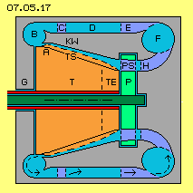
Die Konus-Wand KW muss fest verbunden durch die Streben C (dunkelblau) mit dem äußeren Teil des Gehäuses. Der Rückfluss-Kanal verläuft ebenfalls rundum, also mit einem ringförmigem Querschnitt. Das Wasser fließt dort noch immer mit einem Winkel von etwa 60 Grad. Diese Querstreben könnten als Leitbleche ausgeführt sein und die Strömung etwas steiler (z.B. mit 75 Grad) nach rechts lenken.Die Querschnittsfläche dieses ringförmigen Rückfluss-Kanales D (hellblau) ist relativ groß, damit möglichst wenig Reibung an den Oberflächen auftritt. Das Wasser wird sich in diesem Kanal relativ langsam nach rechts bewegen. Dieser Bereich stellt einen ´Puffer´ hinsichtlich des Durchsatzes dar, weil dort das Wasser mit mehr oder weniger Drall nach rechts fließen kann.
Neu sind hier auch die Leitbleche E (dunkelblau), welche die Funktion eines Stators erfüllen. Anders als in vorigen Versionen wird damit die Strömung in rein axiale Richtung gelenkt (also von links nach rechts ohne Drall). Im Rückfluss-Kanal D ist das Wasser noch mehr oder weniger drehend. Das linke Ende der Leitschaufeln E sollten gerundet sein, so dass sie auch diese leichte Drallströmung verlustfrei entgegen nehmen. Die rechten Enden sollten spitz zulaufend sein.
Im Gegensatz zu den wenigen Querstreben C sollten etwa zwölf bis achtzehn Querstreben E eingesetzt werden. Die Querschnittsfläche des Kanals wird verengt, so dass die Strömung beschleunigt wird. Im Gegensatz zu obiger Querschnitts-Erweiterung ist diese Verengung widerstandslos. Mit diesen Leitschaufeln soll also erreicht werden, dass dort die Strömung parallel zur Systemachse verläuft. Das Wasser ist damit nicht drehend um die Systemachse und weist damit auch keine Fliehkraft zentrifugal zur Systemachse auf.
Zentripetaler Rückfluss
Analog zu obigem rundum verlaufenden Ring B ist hier ein Ring F (hellblau) eingezeichnet. In diesen tritt das Wasser tangential ein, fließt in diesem radial nach innen in Richtung Systemachse und verlässt den Ring durch einen Kanal H (dunkelblau) in Richtung Turbine. Wie bei Ring B dreht auch hier eine Teilmenge des Wassers walzenförmig rundum in diesem Ring F. Wie oben erfolgt auch hier diese relativ scharfe Umlenkung ohne Reibungsverlust.
Das Wasser bewegt sich in einer radialen Ebene, d.h. seine Fliehkraft wird immer senkrecht von der Wandung aufgenommen. Aufgrund dieser Fliehkraft kann es nach innen hin tangential aus dem Ring abfließen. Der Raum innerhalb des Rings wird nach innen enger, andererseits bietet die Öffnung zum Kanal H zusätzlichen Raum. Damit wird das Wasser zurück geführt auf einen engeren Radius zur Systemachse, wobei diese Bewegung nicht entgegen zu einer Zentrifugalkraft (radial zur Systemachse) erfolgt, vielmehr in Richtung einer Zentrifugalkraft (um die Mittelachse des Ringes F).
Das Wasser aus Ring F würde nun in axiale Richtung zur Turbine hin fließen. Damit innerhalb der Konus-Wand Zentrifugalkräfte auftreten, muss die Strömung jedoch um die Systemachse drehend sein, also mit oben unterstelltem flachem Winkel von 30 Grad in den Einlass der Turbine strömen. Diese Umlenkung der Strömung (einwärts und hier nach rechts) in eine Drall-Strömung (um die Systemachse drehend und nach rechts) erfolgt im Kanal H. In diesem Stator sind Leitschaufeln installiert, welche das Wasser aus dem Ring F in gerader Einwärts-Richtung entgegen nehmen. Die Leitschaufeln sind anschließend so im Drehsinn des Systems gekrümmt, dass sie das Wasser in flachem Winkel zum Turbinen-Einlass E hin führen. Diese Leitschaufeln enden innen also in einem Winkel von obigen 30 Grad vorwärts gerichtet im Drehsinn des Systems.
Pumpe und Steuerung
Bevor das Wasser den Bereich der Turbine erreicht, fließt es durch eine Pumpe P (grün). Deren Pumpen-Schaufeln PS (dunkelblau) sind rechtwinklig zur vorigen Leitschaufeln angestellt, weisen also in einem Winkel von 60 Grad rückwärts im Drehsinn des Systems. Im normalen Betrieb dreht diese Pumpe nur ´leer´ in dieser diagonalen Strömung. Der Sog des Wassers an der Konus-Wand reicht in der Strömung zurück: diagonal durch die Pumpe in den Kanal H, von dort aus aber radial in den Ring F hinein und bis zu dessen Einlass E.
Durch anteilige Flieh- bzw. Schub-Kraft wird das Wasser entlang der Konus-Wand also durch den Turbinen-Auslass A hinaus gedrückt bis in den Rücklauf-Kanal D. Andererseits wird durch diese Flieh- bzw. Sog-Kraft das Wasser vom Rücklauf-Kanal D bis in den Turbinen-Einlass E nach gezogen. Weil dort das Wasser keine Drehung um die Systemachse aufweist, steht dieser zentripetalen Strömung keine zentrifugale Fliehkraft entgegen. Diese Lösung mit Umlenkung in radiale Einwärts-Richtung ermöglicht damit einen nahezu verlustfreien Kreislauf.
Diese Pumpe hat eine wichtige Steuerungsfunktion: normalerweise dreht sie (nahezu) gleich schnell wie die dortige Strömung, wobei diese wiederum gleich schnell wie die Turbine an ihrem Einlass dreht. Wenn mehr Leistung gefordert ist, wird die Pumpe beschleunigt, was zur schnelleren Rotation des Wassers im Bereich des Turbinen-Einlasses führt und augenblicklich damit zu erhöhtem Schub entlang der Konus-Wand.
Wenn umgekehrt die Drehgeschwindigkeit der Pumpe reduziert wird, fließt das Wasser weniger flach in den Konus hinein, d.h. die Fliehkraft wird geringer und damit auch die Leistung der Turbine reduziert. Wenn die Pumpe total abgebremst wird, fließt das Wasser gegen den Drehsinn des Systems zur Turbine und das mechanische Drehmoment wird null.
Diese Pumpe ist also eine sehr ´feinfühliges´ Instrument, dient zum Anfahren des Systems, zur Steuerung im laufenden Betrieb mit Anpassung der Leistung an aktuellen Bedarf, wie auch zum Herunter-Fahren des Systems. Ich weise nochmals ausdrücklich darauf hin, dass dieses System selbst-beschleunigend ist, wenn keine oder zu geringe Last an der Turbine anliegt. Die Maximal-Drehzahl der Turbine muss unabdingbar festgelegt und durch geeignete Vorkehrungen gewährleistet sein. Nochmals weise ich ausdrücklich darauf hin, dass ich hier nur theoretische Überlegungen zur prinzipiellen Gestaltung einer Maschine darstelle, das Risiko realer Maschinen aber ausschließlich vom Hersteller und Betreiber solcher Maschinen zu tragen ist.
Kompakt und perfekt
Die hier skizzierte Maschine könnte beispielsweise folgende Daten aufweisen: ein Zylinder mit Außendurchmesser von rund 60 cm und eben solcher Höhe. Der Turbinen-Auslass befindet sich zwischen Radius 18.5 cm und 20 cm mit einer Querschnittsfläche von rund 180 cm^2. Wenn das Wasser dort mit obigen 6 m/s austritt, stellt dieses einen Massedurchsatz von rund 100 kg dar (entsprechend einem Rohr von 15 cm Durchmesser, in welchem 100 Liter Wasser je Sekunde mit etwa 20 km/h fließen). Die Pumpen-Schaufeln bzw. der Turbinen-Einlass befindet sich etwa zwischen Radius 10 cm und 15 cm mit einer Querschnittsfläche von rund 360 cm^2, weil dort die Strömung in axiale Rictung nur mit obigen 3.5 m/s fließt. Obiger Durchsatz wird bei nur etwa 600 rpm erreicht.
Es bleibt jedem überlassen, Vermutungen oder Berechnungen zur Leistung dieses kompakten Motors anzustellen. Selbstverständlich werden nach diesem generellen Prinzip gebaute Motoren weiter zu perfektionieren sein. Im Gegensatz zu allen bekannten Maschinen und auch zu allen anderen hier vorgestellten Konzeptionen, nutzt dieser ´Zentrifugal-Schub-Motor´ die enormen Fliehkräfte nicht nur zur Generierung mechanischen Drehmoments, sondern auch zur autonomen Generierung eines ständigen Kreislaufes des Arbeitsmediums.
Vermutlich sind damit alle gängigen Verbrennungsmotoren in Fahrzeugen zu ersetzen und natürlich sind damit auch weite Bereiche stationären Energie-Bedarfs abzudecken.
| 07.07. Rückschlag-Zentrifuge | 07. Fluid-Maschinen |